Τι έγινε. Έλεγξα ολόκληρο το codebase (≈12.600 γραμμές Python + 570 ABAP), έτρεξα όλο το pipeline και
τα 183 tests, και έκλεισα 16 bugs — τρία από αυτά θα φαίνονταν αμέσως σε ζωντανή επίδειξη ή σε ερώτηση
της επιτροπής. Το dashboard ξαναγράφτηκε στα ελληνικά με ενιαίο design και μία καρτέλα «As-Is vs To-Be» που
συγκεντρώνει όλη την αξιολόγηση (backtest, σενάρια, ευαισθησία, bootstrap, ablation). Δεν προστέθηκαν νέα
features· ό,τι προστέθηκε (WMAPE, αδρανές απόθεμα, launchers) υπηρετεί την παρουσίαση. Τώρα περνούν
192 tests. Όλα είναι σε τρία commits στο branch presentation-ready (§2.2).
get_current_stock(as_of) επέστρεφε 0 για κάθε υλικό και όλες οι προτάσεις
(586/586) έβγαιναν «EXPEDITE». Διορθώθηκε (η ημερομηνία είναι η μεταγενέστερη από snapshot και κίνηση).
presentation-ready.bundle (ή του zip) και push στο GitHub — §2.2.run_all.bat (συνθετικά δεδομένα) ή run_all.bat --keep-data αν έχεις τα ανωνυμοποιημένα SAP — §2.4/2.5.start_dashboard.bat) και πέρασε τις 6 καρτέλες με τον οδηγό της §3 μπροστά σου.Ο πίνακας είναι σε φθίνουσα σειρά σοβαρότητας. Η στήλη «Τι θα έβλεπε η επιτροπή» εξηγεί γιατί άξιζε να διορθωθεί πριν την παρουσίαση. Κάθε διόρθωση συνοδεύεται από test.
| # | Πρόβλημα | Τι θα έβλεπε η επιτροπή | Διόρθωση (αρχείο) |
|---|---|---|---|
| 1 | Η ημερομηνία αναφοράς (auto) έπεφτε μία μέρα πριν το snapshot αποθέματος → απόθεμα 0 παντού. | 586/586 προτάσεις «επείγουσες», €2,9 εκ. προτεινόμενες παραγγελίες σε 60 ημέρες. Το πρώτο πράγμα που φαίνεται στην οθόνη. | Ημερομηνία αναφοράς = max(τελευταίο snapshot, τελευταία κίνηση). src/utils/as_of_date.py |
| 2 | Holding cost ετησιοποιημένο, stockout cost ανά παράθυρο → TCO σε μικτή βάση. | «Το €190.945 είναι για 60 ημέρες ή για έτος;» — δεν υπήρχε σωστή απάντηση. Το ετήσιο ισοδύναμο €1,1 εκ. δεν προκύπτει. | Όλα τα κόστη για το παράθυρο (holding × ημέρες/365)· πεδία *_annualized χωριστά· προστέθηκε ordering cost (πλήθος × €50) και TCO = holding + stockout + ordering, όπως ο Πίνακας 4.6. src/utils/kpi.py |
| 3 | Το MRP ξανα-παρήγγελνε το ίδιο έλλειμμα σε κάθε αναθεώρηση όταν η ανάγκη έπεφτε μέσα στο lead time (π.χ. 3 παραγγελίες ίδιας ημέρας). | Στο To-Be ο πράκτορας κρατούσε περισσότερο απόθεμα από τον planner — αντίθετο από την υπόθεση της ΔΕ. | Lead-time-aware netting: μία παραγγελία για το έλλειμμα που προβάλλεται στην ημερομηνία «σήμερα + LT», καταχώρηση παραλαβής εκεί, σήμανση ημερών κάτω από SS. src/mrp/engine.py |
| 4 | Η πολιτική Wagner-Whitin δεν εκτελούνταν ποτέ (silent fallback σε Lot-for-Lot). | Η ΔΕ δηλώνει 5 αλγορίθμους lot sizing και «αυτόματη επιλογή». Ερώτηση «δείξτε μου ένα υλικό με W-W» = αδιέξοδο. | Rolling-horizon Wagner-Whitin: DP στον ορίζοντα πρόβλεψης, εκδίδεται η πρώτη παραγγελία. src/mrp/lot_sizing.py |
| 5 | Το bootstrap έπαιρνε τα εκατοστημόρια των 30 τιμών (διασπορά ενός παραθύρου) — όχι bootstrap του μέσου. | Η §3.6.3 περιγράφει bootstrap του μέσου με B = 2.000, t-CI, sign test. Ο Πίνακας 4.9 δεν μπορούσε να συμπληρωθεί. | Στάδιο 2 όπως στη ΔΕ: B = 2.000 επαναδειγματοληψίες, CI του μέσου, bootstrap p, t-CI (df = 29), μονόπλευρος t-test, ακριβής έλεγχος προσήμου. src/utils/bootstrap.py |
| 6 | Ασύμμετρη σύγκριση As-Is / To-Be: αρνητικό απόθεμα μόνο στο As-Is, αυθαίρετο αρχικό απόθεμα (2×SS), το To-Be δεν «κληρονομούσε» τις παραγγελίες σε εξέλιξη. | «Είναι δίκαιη η σύγκριση;» — η πιο πιθανή μεθοδολογική ερώτηση. Η απάντηση ήταν «όχι εντελώς». | Ίδια δυναμική (lost sales), ίδιο αρχικό απόθεμα (ανακατασκευή από snapshot + κινήσεις), ίδια pipeline παραλαβών εντός lead time. scripts/run_validation.py, repository.get_stock_at |
| 7 | Το ablation είχε δικό του (αντιγραμμένο) προσομοιωτή. | Baseline ablation ≠ To-Be του backtest (το σημείο 6 του README_Παράδοσης). | Το ablation καλεί τον ίδιο simulate_tobe με disabled_rules. scripts/run_rule_ablation.py |
| 8 | POQ παρήγγελνε λιγότερο από το καθαρό έλλειμμα· POQ με σταθερή περίοδο 7 ημερών. | Απόθεμα κάτω από SS μετά την παραλαβή· υπερβολικές παραγγελίες σε φθηνά υλικά. | POQ ≥ καθαρή ανάγκη· περίοδος T* = EOQ/ημερήσια ζήτηση (7–60 ημ., Silver-Pyke-Peterson §6.5). lot_sizing.py |
| 9 | Ο κανόνας R-DEAD-STOCK χρησιμοποιούσε το «σήμερα» του dataset και όχι την ημερομηνία της προσομοίωσης. | Σε παράθυρα bootstrap βαθιά στο ιστορικό, ενεργά υλικά χαρακτηρίζονταν νεκρό απόθεμα. | Τα beliefs μεταφέρουν as_of· οι κανόνες το χρησιμοποιούν. src/rules/policies.py, src/agent/* |
| 10 | Η πρόβλεψη ζήτησης «αγκυρωνόταν» στην τελευταία κίνηση, όχι στο σήμερα. | Υλικό χωρίς κατανάλωση 100 ημέρες → πρόβλεψη με τον παλιό ρυθμό → άσκοπες προτάσεις. | Η ημερήσια σειρά τελειώνει στην ημερομηνία αναφοράς (μηδενικά στο τέλος). src/utils/forecasting.py |
| 11 | Πρόσημο κινήσεων 601/652 λάθος (πωλήσεις ως παραλαβές)· χάρτης DISLS: WB ≠ EOQ. | Με πραγματικά δεδομένα: λάθος στατιστικά ζήτησης για τελικά προϊόντα· λάθος πολιτική για WB (εβδομαδιαίο lot). | Σωστή σημειολογία BWART και πλήρης χάρτης SAP lot-sizing (EX, FX, WB, MB, PK, WI, BE, SP…). anonymization.py |
| 12 | Ανοιχτές παραγγελίες με ημερομηνία στο παρελθόν αγνοούνταν. | Προτάσεις ενώ υπάρχει υλικό καθ’ οδόν. | Καθυστερημένες παραλαβές θεωρούνται διαθέσιμες σήμερα (όπως στο SAP MRP). engine.py |
| 13 | Το γράφημα «κανόνες» έσπαγε τα ονόματα σε κάθε κενό (regex). | Μία μπάρα με όνομα «|» στην Επισκόπηση. | str.split(" | ", regex=False). overview_tab.py |
| 14 | Τα integration tests έγραφαν στην πραγματική βάση και στο validation_report.csv. | Ένα pytest πριν την παρουσίαση = χαμένες προτάσεις και λάθος αναφορά στην οθόνη. |
Απομονωμένη βάση/φάκελοι στα tests (σωστά ονόματα μεταβλητών). tests/test_integration.py |
| 15 | «Περισσότερες παραγγελίες = καλύτερα» στη σύγκριση KPI. | Πίνακας με ↑ better δίπλα στο n_orders. | Ουδέτερο· η ανταλλαγή φαίνεται στο ordering cost. kpi.py |
| 16 | Το R-EXPEDITE σημείωνε ως επείγουσες όλες τις μελλοντικές παραγγελίες ενός κρίσιμου υλικού. | «Γιατί είναι επείγουσα μια παραγγελία για τον Νοέμβριο;» | Επείγουσα μόνο η παραγγελία που εκδίδεται άμεσα (εντός lead time). policies.py |
run_all.bat, start_dashboard.bat (Windows) και run_all.sh.python --version.ollama pull llama3.1:8b (≈4,7 GB, μία φορά).Το branch presentation-ready σου παραδίδεται ως αρχείο presentation-ready.bundle (μαζί με τον οδηγό),
γιατί δεν είχα δικαίωμα push στο GitHub σου. Το bundle περιέχει τα commits πάνω από το τρέχον main (db88bdf)· το εισάγεις
στο τοπικό σου repo και το ανεβάζεις εσύ:
# Στο τοπικό σου clone (πρέπει να είναι στο main, commit db88bdf) cd C:\Projects\replenishment-agent git fetch C:\Downloads\presentation-ready.bundle presentation-ready:presentation-ready git checkout presentation-ready git push -u origin presentation-ready # ανέβασέ το στο GitHub # Όταν είσαι ικανοποιημένος, ενσωμάτωσέ το στο main: git checkout main git merge presentation-ready git push origin main
Εναλλακτικά (χωρίς git): αποσυμπίεσε το replenishment-agent-presentation-ready.zip που συνοδεύει τον οδηγό — είναι
ο πλήρης φάκελος του project στο ίδιο commit — και συνέχισε από το §2.3.
python -m venv .venv .venv\Scripts\activate python -m pip install --upgrade pip pip install -r requirements.txt
Αν το PowerShell αρνηθεί το activate: Set-ExecutionPolicy -Scope CurrentUser RemoteSigned και ξανά.
run_all.bat
Εκτελεί με τη σειρά: δημιουργία δεδομένων (150 υλικά, 12 μήνες) → ETL σε SQLite → πράκτορας (perceive → deliberate → act)
→ backtest 60 ημερών → 3 σενάρια κόστους → ανάλυση ευαισθησίας → 30 τυχαία παράθυρα + bootstrap → rule ablation (stress).
Στο τέλος υπάρχουν στον φάκελο τα αρχεία validation_report*.csv, bootstrap_report*.csv,
ablation_report.csv και η βάση replenishment.db. Τα ίδια βήματα, ένα-ένα, στο Παράρτημα Α.
ZMRP_AGENT_EXPORT στο SAP (φάκελος abap/) → 6 CSV· αντέγραψέ τα στο data\raw\.python -m src.data_layer.anonymization → data\anonymized\*.csv (ψευδώνυμα, πρόσημα κινήσεων, smart defaults master data).run_all.bat --keep-data (δεν ξαναδημιουργεί συνθετικά δεδομένα· το ETL προτιμά αυτόματα το data\anonymized)..env → AS_OF_DATE=2026-01-28.data\raw είναι στο .gitignore — ποτέ στο GitHub. Τα ψευδώνυμα (MD5) είναι μη αναστρέψιμα.
Το backtest χρειάζεται ≥ 90 ημέρες ιστορικό κινήσεων πριν το snapshot· το bootstrap ≥ 6 μήνες για 30 παράθυρα 21 ημερών.
Με 1.500+ υλικά οι χρόνοι είναι ~10× (bootstrap ≈ 15 λεπτά): τρέξε τα από την προηγούμενη μέρα.start_dashboard.bat
# ή: streamlit run dashboard\app.py
Ανοίγει στο http://localhost:8501. Κλείσιμο: κλείσε το παράθυρο ή Ctrl+C. Το κουμπί «Εκτέλεση πράκτορα» στο
πλάι ξανατρέχει τον κύκλο BDI (2–10 δευτερόλεπτα) και ανανεώνει τις προτάσεις — ασφαλές να το πατήσεις ζωντανά.
| Έλεγχος | Πώς | Αναμενόμενο |
|---|---|---|
| Tests | pytest -q | 192 passed (≈15 s). Τα tests τρέχουν σε απομονωμένη βάση — δεν πειράζουν τα δεδομένα σου. |
| Πράκτορας | python scripts\run_agent.py | Με συνθετικά δεδομένα: 108 προτάσεις, 50 υλικά, 4 επείγουσες. |
| Dashboard | Άνοιξε τις 6 καρτέλες | Καμία κόκκινη προειδοποίηση «Δεν βρέθηκε …» στην καρτέλα As-Is vs To-Be. |
| Ημερομηνία αναφοράς | Επικεφαλίδα | = ημερομηνία snapshot (21.09.2026 στα συνθετικά). |
| Σύμπτωμα | Αιτία / λύση |
|---|---|
ModuleNotFoundError: No module named 'src' | Τρέξε τις εντολές από τον ριζικό φάκελο του project (εκεί που είναι το requirements.txt). |
no such table: materials | Δεν έτρεξε το ETL: python scripts\run_etl.py. |
| Η καρτέλα As-Is vs To-Be λέει «Δεν βρέθηκε αναφορά» | Λείπει CSV· η οθόνη δείχνει την εντολή που το παράγει. Τα CSV πρέπει να είναι στον ριζικό φάκελο. |
| Όλες οι προτάσεις επείγουσες / απόθεμα 0 παντού | Παλιά έκδοση κώδικα (branch main πριν το merge) ή AS_OF_DATE λάθος στο .env. Σβήσε τη γραμμή ή βάλε auto. |
| Το Copilot γράφει «Ollama δεν είναι διαθέσιμο» | Άνοιξε την εφαρμογή Ollama (ή ollama serve) και έλεγξε ollama list. Δεν είναι απαραίτητο για την επίδειξη. |
| Port 8501 σε χρήση | streamlit run dashboard\app.py --server.port 8502. |
Streamlit εμφανίζει προειδοποίηση για use_container_width | Αβλαβές· ο κώδικας προσαρμόζεται αυτόματα σε παλιές/νέες εκδόσεις. Ενημέρωση: pip install -U streamlit. |
Σε κάθε καρτέλα: τι βλέπει η επιτροπή, τι σημαίνει και μία πρόταση που μπορείς να πεις αυτούσια (σε πλάγια). Τα νούμερα των εικόνων είναι από τα συνθετικά δεδομένα· με τα πραγματικά θα διαφέρουν.
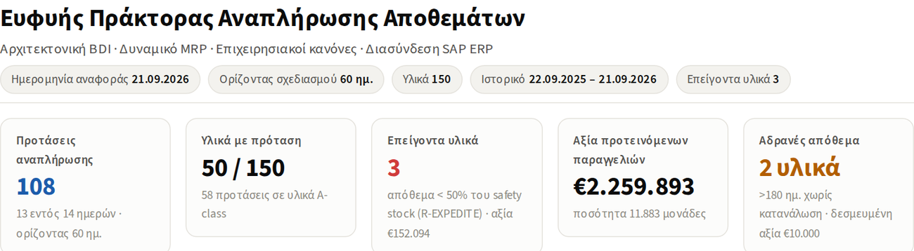
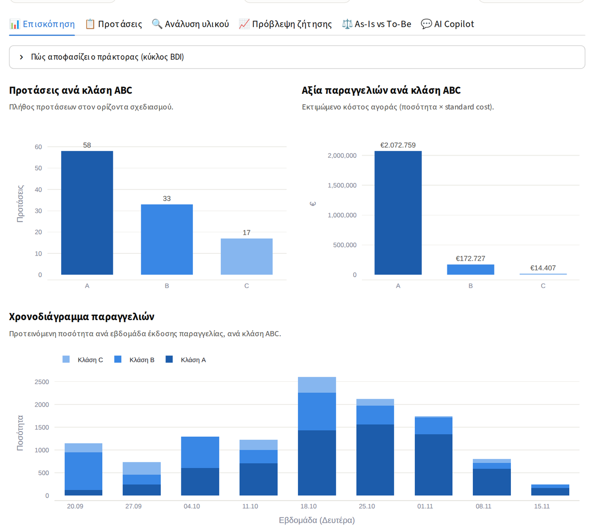
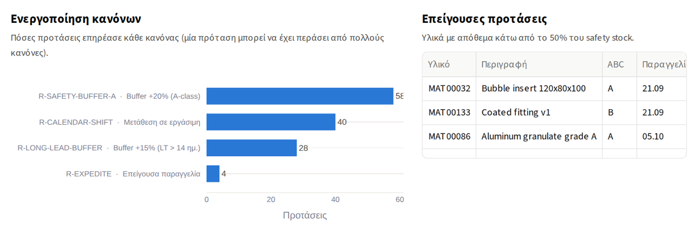
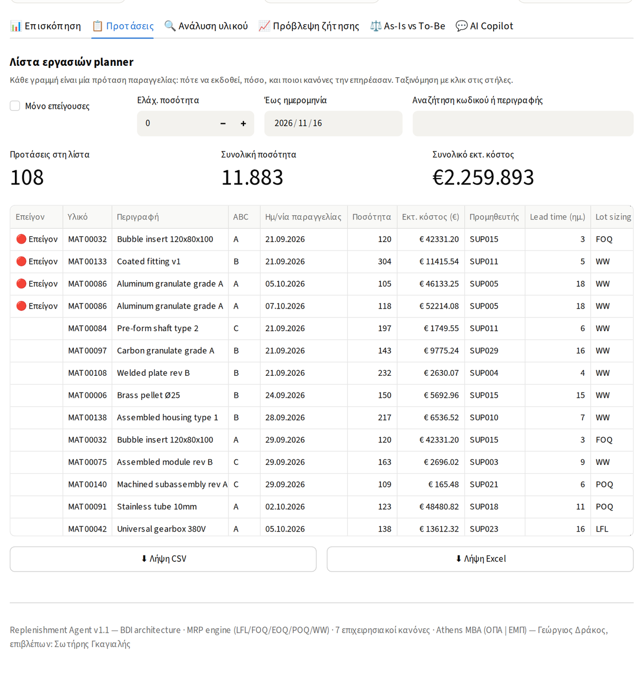
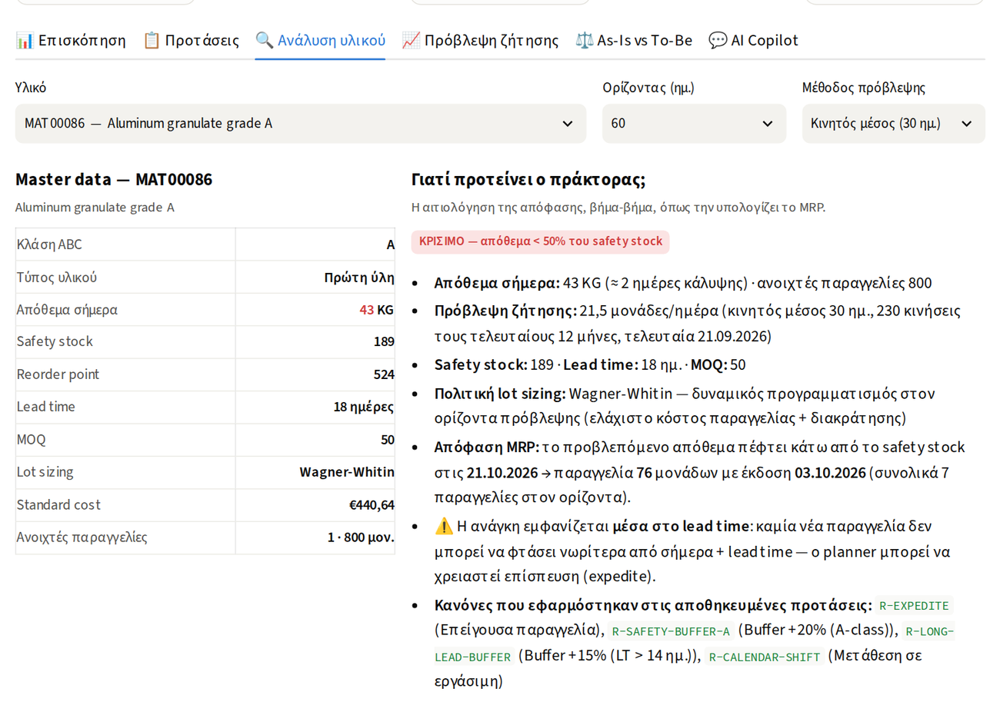
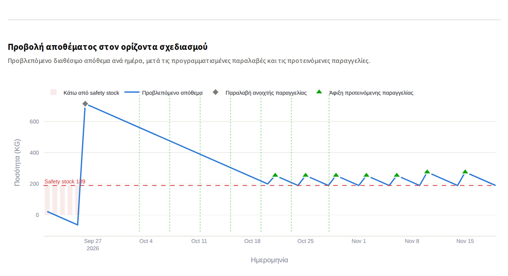
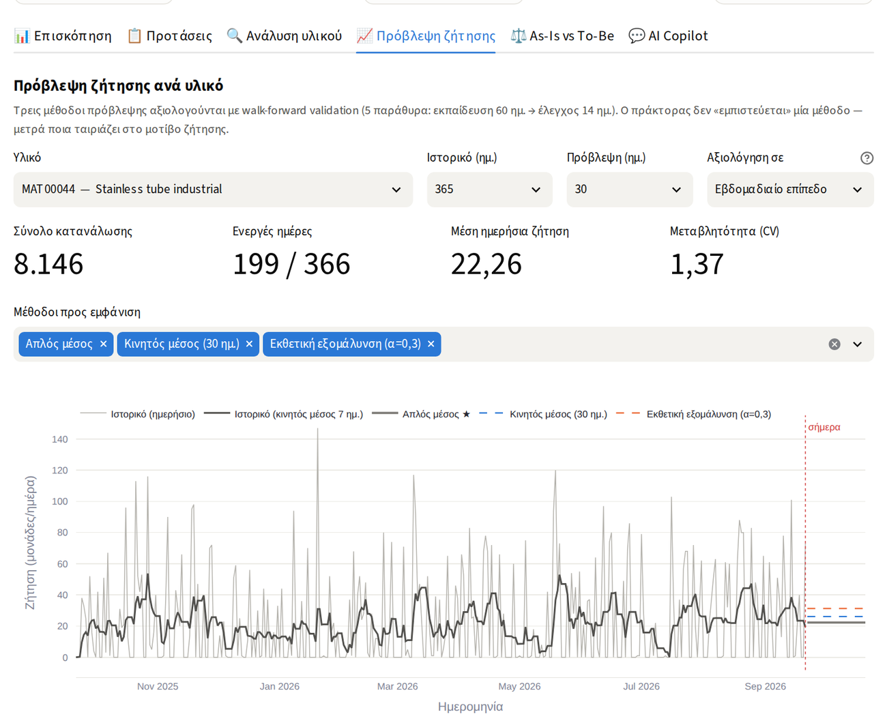
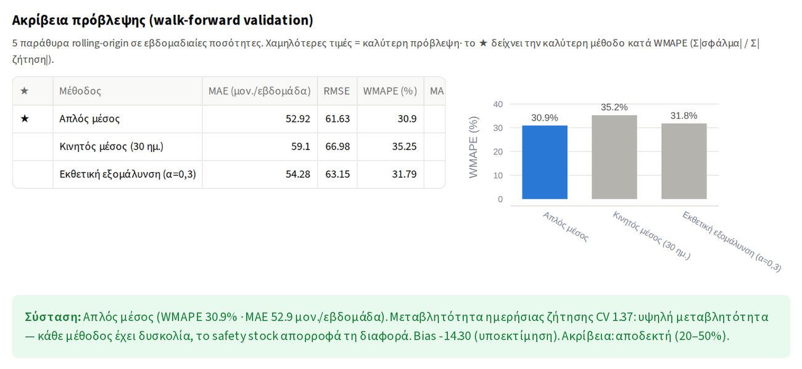
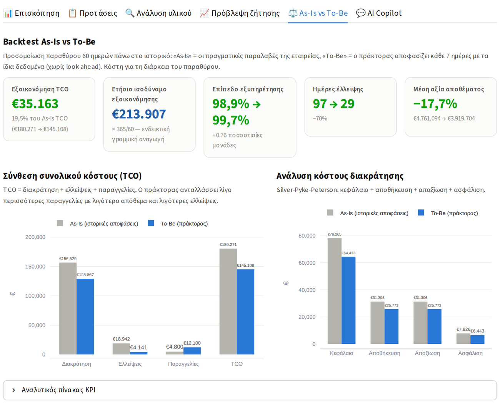
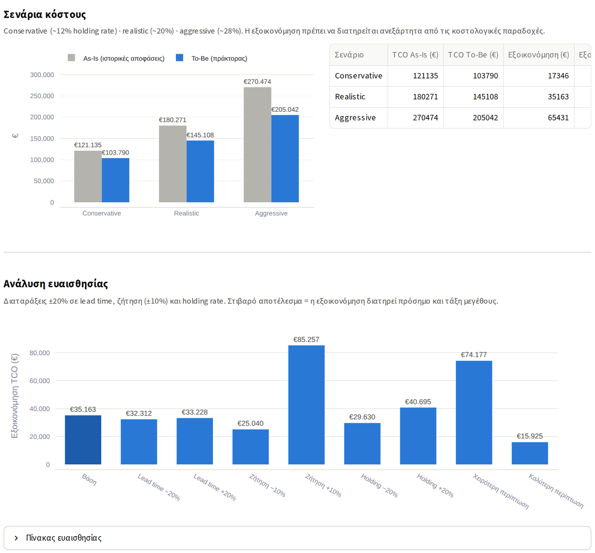
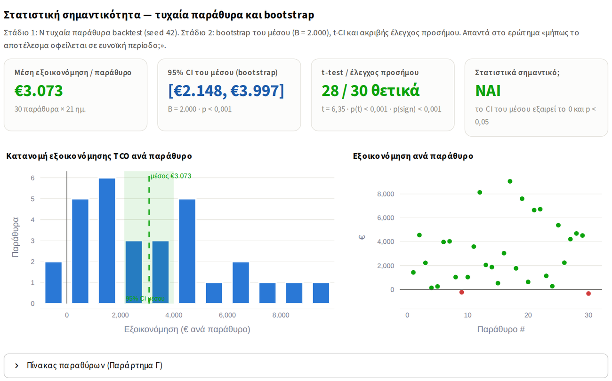
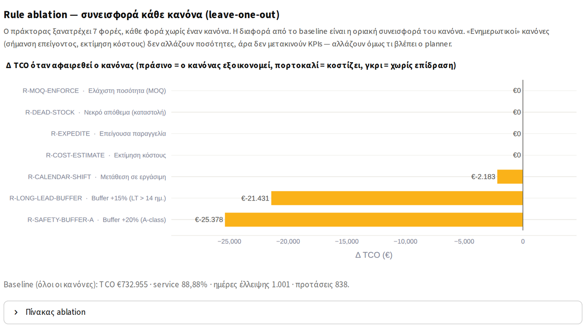
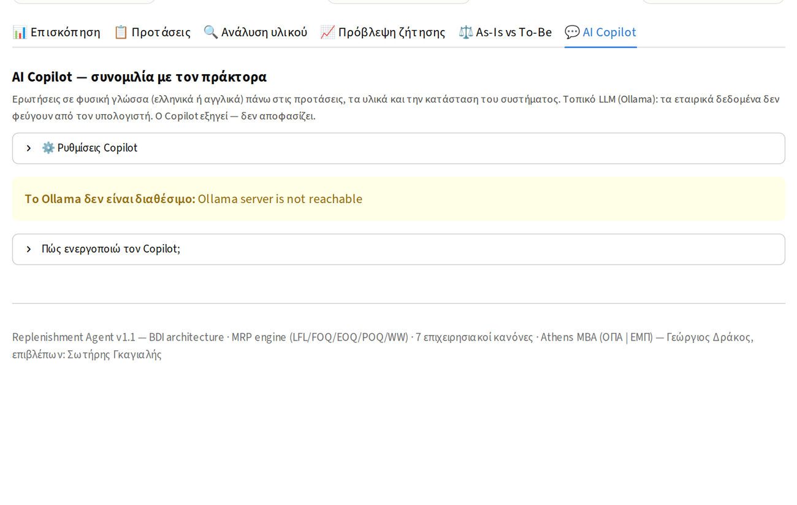
2027ΠΑΡ_ΔΡΑΚΟΣ ΓΕΩΡΓΙΟΣ.pdf. Άρα: 12–13 λεπτά ομιλία
(από τα οποία 5–6 ζωντανή επίδειξη) και 7–8 λεπτά ερωτήσεις. Τα κριτήρια αξιολόγησης (Παράρτημα 2 του Οδηγού) βαθμολογούν
χωριστά την «προφορική υποστήριξη» — η ζωντανή επίδειξη είναι ο τρόπος να πάρεις 9,5–10 εκεί.| Λεπτό | Ενότητα | Περιεχόμενο / διαφάνειες |
|---|---|---|
| 0:00–1:00 | Άνοιγμα | Τίτλος, ένα «γιατί»: «Οι planners μιας εταιρείας με 1.500 κωδικούς δεν μπορούν να βελτιστοποιήσουν 1.500 αποφάσεις την εβδομάδα. Το SAP MRP είναι στατικό. Έφτιαξα έναν πράκτορα που το κάνει — και τον μέτρησα.» (1 διαφάνεια) |
| 1:00–3:00 | Πρόβλημα & ερευνητικά ερωτήματα | Ελλείψεις + υπεραποθέματα + χειροκίνητες παρεμβάσεις (§1.2)· τα ερευνητικά ερωτήματα (ΥΕ1–ΥΕ4)· η μελέτη περίπτωσης. (2 διαφάνειες) |
| 3:00–5:00 | Μεθοδολογία & αρχιτεκτονική | Design Science Research· τρι-επίπεδη αρχιτεκτονική (SAP → ABAP → SQLite → πράκτορας → dashboard)· κύκλος BDI· 5 lot sizing + 7 κανόνες· πλαίσιο αξιολόγησης (backtest, bootstrap, ablation, ευαισθησία). (2–3 διαφάνειες, Σχήμα 3.1/4.1) |
| 5:00–11:00 | Ζωντανή επίδειξη | Βλ. 4.2 — Επισκόπηση (1΄) → Ανάλυση υλικού (2΄) → As-Is vs To-Be (3΄). Μία διαφάνεια-γέφυρα «Ας το δούμε να τρέχει». |
| 11:00–13:00 | Αποτελέσματα & οφέλη | Ένας πίνακας με τα KPI του backtest (60 ημ.) + bootstrap σε μία γραμμή + τα οφέλη για την εταιρεία (§5). (2 διαφάνειες) |
| 13:00–13:30 | Περιορισμοί & μελλοντική εργασία | Counterfactual προσομοίωση, ντετερμινιστικά lead times, As-Is baseline, πιλοτική εφαρμογή. (1 διαφάνεια — δείχνει κριτική σκέψη, κριτήριο αξιολόγησης) |
| 13:30–20:00 | Ερωτήσεις | §6. Κράτα το dashboard ανοιχτό — πολλές απαντήσεις δίνονται με ένα κλικ. |
Προετοιμασία 10 λεπτά πριν: start_dashboard.bat, browser σε πλήρη οθόνη (F11), zoom 110%, πλευρική μπάρα κλειστή
(βελάκι ««» πάνω αριστερά) ώστε τα γραφήματα να είναι μεγάλα, καρτέλα «Επισκόπηση» ανοιχτή, κλειστό το Copilot expander.
Έχε δοκιμάσει την ίδια ροή το πρωί.
| Βήμα | Κλικ | Τι λες (30–45 δευτερόλεπτα το καθένα) |
|---|---|---|
| 1 | Επισκόπηση — δείξε επικεφαλίδα και δείκτες | «Αυτή είναι η κατάσταση την ημέρα εξαγωγής από το SAP: Χ υλικά, Υ κινήσεις. Ο πράκτορας παρήγαγε Ν προτάσεις σε λίγα δευτερόλεπτα, από τις οποίες Κ επείγουσες.» |
| 2 | Άνοιξε «Πώς αποφασίζει ο πράκτορας» | «Beliefs από το SAP, Desires = επίπεδο εξυπηρέτησης 98% με ελάχιστο κόστος, Deliberation = πρόβλεψη → MRP → lot sizing → 7 κανόνες, Intentions = πότε και πόσο.» (Κλείσε το ξανά.) |
| 3 | Κατέβα στο «Ενεργοποίηση κανόνων» | «Η γνώση της εταιρείας είναι κωδικοποιημένη σε κανόνες με προτεραιότητα· βλέπουμε ποιος άγγιξε πόσες προτάσεις. Αυτό δεν το κάνει το standard MRP.» |
| 4 | Καρτέλα «Ανάλυση υλικού» (προεπιλεγμένο κρίσιμο A-item) | Διάβασε την αιτιολόγηση δυνατά (3.3). «Κάθε πρόταση είναι εξηγήσιμη — αυτό ζητούν οι planners και αυτό ζητά ο νόμος.» |
| 5 | Δείξε το γράφημα προβολής | «Το απόθεμα, το όριο ασφαλείας, η ανοιχτή παραγγελία που φτάνει, και οι αφίξεις που προτείνει ο πράκτορας ώστε να μην πέσουμε ποτέ κάτω από το όριο.» |
| 6 | Άλλαξε «Μέθοδος πρόβλεψης» σε εκθετική εξομάλυνση | «Ο υπολογισμός ξαναγίνεται ζωντανά· η πολιτική είναι παραμετροποιήσιμη ανά υλικό και ανά εταιρεία.» (Επανάφερε.) |
| 7 | Καρτέλα «As-Is vs To-Be» — οι 5 δείκτες + σύνθεση TCO | «Ξαναπαίξαμε 60 ημέρες ιστορικού. Γκρι = ό,τι έκανε η εταιρεία, μπλε = ο πράκτορας με τα ίδια δεδομένα, χωρίς να βλέπει το μέλλον. Λιγότερο απόθεμα, λιγότερες ελλείψεις, λίγο περισσότερες παραγγελίες — καθαρά Χ% χαμηλότερο συνολικό κόστος.» |
| 8 | Κατέβα στο bootstrap (ιστόγραμμα) και στο ablation | «Για να μην είναι τυχαίο: 30 τυχαία παράθυρα, διάστημα εμπιστοσύνης που δεν περιλαμβάνει το μηδέν, 28 στα 30 θετικά. Και κάθε κανόνας μετρήθηκε χωριστά με ablation.» Επιστροφή στις διαφάνειες. |
docs/guide_src/img/, ή τράβα δικά σου με τα πραγματικά δεδομένα). Αν πέσει το laptop/ο προβολέας, η παρουσίαση συνεχίζει ίδια.Η επιτροπή του MBA κρίνει τη «συνεισφορά στο αντικείμενο» και την «ανάλυση αποτελεσμάτων». Δώσε πρώτα τα ποσοτικά οφέλη με τη σωστή βάση, μετά τα ποιοτικά, και κλείσε με μία συντηρητική εκτίμηση απόδοσης. Ο τρόπος που λες έναν αριθμό μετράει όσο ο αριθμός.
| Όφελος | Πού το διαβάζεις (τελική εκτέλεση) | Πώς το λες |
|---|---|---|
| Μείωση συνολικού κόστους αποθεμάτων (TCO) στο παράθυρο | validation_report.csv → total_cost_of_ownership (as_is, to_be, delta_pct) | «Στις 60 ημέρες του backtest το TCO μειώθηκε κατά Χ% (€Α → €Β).» |
| Ετήσιο ισοδύναμο εξοικονόμησης | ίδιο αρχείο → tco_annualized_eur (delta_abs) | «Γραμμική αναγωγή σε έτος: ≈ €Χ, ενδεικτική, με τις επιφυλάξεις της §5.5.» Ποτέ μην πολλαπλασιάσεις ξανά με 365/60. |
| Λιγότερο δεσμευμένο κεφάλαιο | avg_inventory_eur (delta_pct) και capital_cost_eur | «Το μέσο απόθεμα μειώθηκε Χ% — δηλαδή €Υ λιγότερο δεσμευμένο κεφάλαιο, χωρίς να χειροτερέψει η εξυπηρέτηση.» |
| Καλύτερη εξυπηρέτηση | cycle_service_level_pct, stockout_days, stockout_cost_eur | «Οι ημέρες έλλειψης μειώθηκαν Χ% και το κόστος ελλείψεων (χαμένο περιθώριο + επείγουσες προμήθειες) Υ%.» |
| Πού πάει η αξία | validation_report_abc.csv | «Το Χ% της εξοικονόμησης προέρχεται από τα A-items — Pareto: εκεί εστιάζουμε την πιλοτική εφαρμογή.» |
| Στιβαρότητα σε παραδοχές | validation_report_all_scenarios.csv, validation_report_sensitivity.csv | «Θετική εξοικονόμηση και στα τρία κοστολογικά σενάρια και σε όλες τις διαταράξεις ±20%.» |
| Στατιστική βεβαιότητα | bootstrap_report_summary.csv (mean_ci_lower/upper, n_positive, p-values) | «30 τυχαία παράθυρα: μέση εξοικονόμηση €Χ ανά 21 ημέρες, 95% CI [€Α, €Β], Ν/30 θετικά, p < 0,001.» |
| Ταχύτητα | κονσόλα run_agent.py | «Πλήρης κύκλος για όλα τα υλικά σε δευτερόλεπτα — μπορεί να τρέχει κάθε πρωί.» |
run_validation.py --window-days 180 (ή 365 αν έχεις ιστορικό).Χρησιμοποίησε το σχήμα της ΔΕ (§5) αλλά με τα νέα ποσά:
ετήσια εξοικονόμηση (ενδεικτική) = tco_annualized_eur(As-Is) − tco_annualized_eur(To-Be)
← validation_report.csv
συντηρητικό σενάριο = ¼ της παραπάνω (αντίδραση προμηθευτών, μερική αποδοχή)
κόστος εφαρμογής = €30–50 χιλ. (ολοκλήρωση, εκπαίδευση, 6 μήνες υποστήριξη)
payback (μήνες) = κόστος εφαρμογής / (συντηρητική ετήσια εξοικονόμηση / 12)
Παράδειγμα με τα συνθετικά δεδομένα: €214 χιλ./έτος → συντηρητικά ≈ €53 χιλ./έτος → payback 7–11 μήνες με κόστος €30–50 χιλ. Σε πραγματική εταιρεία 1.500 υλικών τα ποσά κλιμακώνονται με την αξία των αποθεμάτων — γι’ αυτό το επιχείρημα «πιλοτική εφαρμογή στα A-items πρώτα» είναι ισχυρό.
Σειρά κατά πιθανότητα. Οι δύσκολες είναι σημειωμένες. Απάντα σύντομα, με το dashboard ή έναν πίνακα ανοιχτό όπου χρειάζεται.
Δύο στάδια (§3.6.3): 30 τυχαία παράθυρα 21 ημερών από όλο το ιστορικό (block subsampling) και bootstrap του μέσου με 2.000 επαναδειγματοληψίες. Το 95% CI του μέσου δεν περιλαμβάνει το μηδέν, ο t-test και ο ακριβής έλεγχος προσήμου συμφωνούν (p < 0,001), Ν/30 παράθυρα θετικά. Δείξε το ιστόγραμμα. Πρόσθεσε: «τα παράθυρα επικαλύπτονται μερικώς — γι’ αυτό αναφέρω και τον έλεγχο προσήμου που δεν εξαρτάται από κατανομή» (§5.5.1).
Ίδιο αρχικό απόθεμα (ανακατασκευή από snapshot και κινήσεις), ίδιες παραγγελίες σε εξέλιξη κατά την έναρξη (κληρονομούνται και στο To-Be), ίδια πραγματική ζήτηση, ίδια δυναμική αποθέματος (χωρίς αρνητικό απόθεμα και στα δύο), ίδιο μοντέλο κόστους. Ο πράκτορας σε κάθε αναθεώρηση βλέπει μόνο κινήσεις ≤ t. Περιορισμός που δηλώνω: το As-Is δεν «αντιδρά» — είναι καταγραφή, όχι μοντέλο του planner· και η μη ικανοποιηθείσα ζήτηση δεν καταγράφεται στο SAP, άρα το κόστος ελλείψεων του As-Is είναι συντηρητικό.
Για τις 60 ημέρες του παραθύρου — όλα τα κόστη είναι στην ίδια βάση (διακράτηση × 60/365, ελλείψεις και παραγγελίες εντός παραθύρου). Το ετήσιο ισοδύναμο είναι γραμμική αναγωγή και το αναφέρω ως ενδεικτικό. (Μην αφήσεις κανένα νούμερο της ΔΕ να αντιφάσκει σε αυτό — §7.)
Επειδή βελτιστοποιεί το άθροισμα διακράτησης και παραγγελιών (EOQ/POQ/W-W): για ακριβά υλικά ο οικονομικός κύκλος είναι λίγες ημέρες,
για φθηνά μήνες. Ο planner παρήγγελνε μεγάλες παρτίδες «για σιγουριά». Το κόστος παραγγελιών (€50/παραγγελία) είναι μέσα στο TCO —
η εξοικονόμηση είναι μετά από αυτό. Αν η εταιρεία έχει ακριβότερη διαδικασία παραγγελίας, αλλάζει μία παράμετρος (DEFAULT_ORDERING_COST) και ο πράκτορας παραγγέλνει αραιότερα.
Το SAP MRP εφαρμόζει στατικές παραμέτρους (EISBE, DISLS) που κάποιος πρέπει να συντηρεί. Ο πράκτορας: (α) υπολογίζει δυναμικά safety stock (z·σ·√LT) και πολιτική lot sizing από τη μεταβλητότητα, (β) εφαρμόζει επιχειρησιακούς κανόνες με προτεραιότητα (buffers, dead stock, ημερολόγιο, επείγον), (γ) εξηγεί κάθε πρόταση, (δ) αυτοαξιολογείται (backtest, bootstrap, ablation). Δεν αντικαθιστά το SAP· τρέχει δίπλα του, read-only.
Η BDI δίνει διαχωρισμό αντίληψης (beliefs), στόχων (desires) και δεσμεύσεων (intentions): μπορούμε να αλλάξουμε την πηγή δεδομένων
(offline → live API) ή τους στόχους (service level 95% αντί 98%) χωρίς να αγγίξουμε τη λογική. Και κάθε πρόταση είναι intention με αιτιολόγηση —
η εξηγησιμότητα είναι δομική, όχι πρόσθετη. Ο κύκλος perceive → deliberate → act είναι ο κώδικας του src/agent/.
Με 12–18 μήνες ιστορικό ανά υλικό και διακοπτόμενη ζήτηση, τα νευρωνικά υπερπροσαρμόζουν και δεν εξηγούνται. Εδώ οι τρεις μέθοδοι
αξιολογούνται ανά υλικό με walk-forward validation και ο πράκτορας διαλέγει· το safety stock απορροφά την υπόλοιπη αβεβαιότητα. Το ML είναι
drop-in επέκταση (ίδια διεπαφή forecast()) — μελλοντική εργασία.
Δύο είναι ενημερωτικοί (R-EXPEDITE σημαίνει, R-COST-ESTIMATE κοστολογεί) — αλλάζουν τι βλέπει ο planner, όχι ποσότητες, άρα δεν μπορούν να κινήσουν KPI. Δύο είναι δίχτυα ασφαλείας που δεν ενεργοποιήθηκαν στο παράθυρο (R-DEAD-STOCK: κανένα υλικό >365 ημέρες· R-MOQ-ENFORCE: το MOQ εφαρμόζεται ήδη στο lot sizing — άμυνα σε βάθος). Είναι το «μετασχηματιστικοί vs ενημερωτικοί» της §4.7.2.
Επειδή η προσομοίωση έχει ντετερμινιστικά lead times και γνωστή ζήτηση εκ των υστέρων: ένα buffer που προστατεύει από καθυστερήσεις προμηθευτή δεν μπορεί να «πληρωθεί» σε ένα backtest όπου κανείς προμηθευτής δεν καθυστερεί. Το ablation μετρά το κόστος της ασφάλισης, όχι το όφελος. Η ευαισθησία με lead time +20% δείχνει ότι η εξοικονόμηση διατηρείται. Το δηλώνω ως περιορισμό και προτείνω στοχαστικά lead times ως μελλοντική εργασία — και ως πρακτική σύσταση, τα ποσοστά των buffers να βαθμονομηθούν ανά εταιρεία (το δίλημμα κόστους/ανθεκτικότητας της §5.7.2).
Πες ακριβώς με ποιο dataset παρήχθησαν οι πίνακες της ΔΕ και η επίδειξη: ανωνυμοποιημένη εξαγωγή SAP της εταιρείας (πόσα υλικά, πόσοι μήνες, ποια συναίνεση) ή/και το συνθετικό dataset του γεννήτορα (150 υλικά, seed 42, προσομοιωμένος planner). Αν χρησιμοποιείς και τα δύο, πες ποιο για τι. Η συνέπεια κειμένου–κώδικα–επίδειξης είναι το πιο εύκολο πράγμα να ελεγχθεί από έναν εξεταστή που θα τρέξει τον κώδικα.
Ο πυρήνας (BDI, MRP, κανόνες) δεν έχει λογική κλάδου. Για νέα εταιρεία: εξαγωγή με το ίδιο ABAP, ανωνυμοποίηση, smart defaults αν λείπει master data, βαθμόνομηση κανόνων/σεναρίου κόστους, backtest στο δικό της ιστορικό, πιλοτική εφαρμογή στα A-items — το playbook έξι βημάτων. Περιορισμός: μία μελέτη περίπτωσης (§5.5).
Πρόσβαση του planner στην αιτιολόγηση με φυσική γλώσσα («γιατί 500 τεμάχια;»), χωρίς να μάθει το εργαλείο· τοπικό LLM άρα μηδενική διαρροή δεδομένων· read-only εργαλεία άρα δεν μπορεί να «κάνει ζημιά». Αξιολογήθηκε ποιοτικά (n = 2 planners) — formative, όχι στατιστική.
Σύνδεση live (OData/RFC) αντί για CSV, αυτόματη έκδοση ME21N με έγκριση, στοχαστικά lead times στην αξιολόγηση, πιλοτική εφαρμογή 3 μηνών με A/B σύγκριση planners, και βαθμονόμηση των παραμέτρων κόστους από τη λογιστική της εταιρείας.
Φίλτρο στο επίπεδο δεδομένων: σε κάθε αναθεώρηση t το Repository επιστρέφει μόνο κινήσεις με ημερομηνία ≤ t και το απόθεμα της προσομοίωσης·
η μελλοντική ζήτηση χρησιμοποιείται μόνο για να «καταναλώσει» απόθεμα και να μετρήσει KPI. Το master data (safety stock, lead time) είναι στατικό
για όλο το παράθυρο — το δηλώνω ως απλοποίηση.
Γιατί έτσι καταναλώνει την πρόβλεψη το MRP (άθροισμα ημερών μέχρι την επόμενη παραλαβή) και γιατί το MAPE σε ημερήσια διακοπτόμενη ζήτηση απλώς μετρά πόσες μέρες είχαν μηδέν. Χρησιμοποιώ WMAPE (Syntetos & Boylan). Η ημερήσια αξιολόγηση είναι διαθέσιμη με ένα κλικ.
Απάντησε σύμφωνα με τη Δήλωση Χρήσης Generative AI (Παράρτημα Ε) και το Σεμινάριο (διαφ. 41–43): ποια εργαλεία, για τι (scaffolding, τεκμηρίωση, έλεγχος κώδικα), και ότι ο συγγραφέας είναι υπεύθυνος για κάθε γραμμή και κάθε αριθμό. Ο ίδιος ο έλεγχος που περιγράφει αυτός ο οδηγός (εντοπισμός και διόρθωση 16 σφαλμάτων με tests) είναι καλό παράδειγμα «επικύρωσης από τον συγγραφέα» — αν το αναφέρεις, πες το με ακρίβεια.
Αφορά το Diplomatiki_Ergasia_Drakos_Georgios_v2.docx. Ο πίνακας συμπληρώνει τα 15 κίτρινα σημεία του
README_Παράδοσης — τα σημεία 5, 6, 7, 13, 15 απαντώνται εδώ οριστικά.
| Σημείο ΔΕ | Τι ισχύει τώρα | Τι κάνεις |
|---|---|---|
| §3.6.1, §4.1, §4.5.1 (βάση κόστους) | Το κείμενο («κόστη για τη διάρκεια του παραθύρου») είναι σωστό — ο κώδικας το κάνει τώρα πραγματικά. Το README_Παράδοσης σημείο 15 απαντάται: τα παλιά ποσά ήταν ετησιοποιημένα. | Κράτα το κείμενο. Αντικατάστησε όλα τα ποσά με τη νέα εκτέλεση. Πρόσθεσε μία πρόταση: «Το κόστος διακράτησης = μέση αξία αποθέματος × ετήσιο ποσοστό × ημέρες/365». |
| Πίνακας 4.6 | Ο κώδικας παράγει πλέον όλες τις γραμμές, και το ordering cost (n_orders × €50) που υπήρχε στον πίνακα χωρίς πηγή. | Συμπλήρωσε από validation_report.csv: cycle_service_level_pct, fill_rate_pct, stockout_days, holding_cost_eur, stockout_cost_eur, ordering_cost_eur, total_cost_of_ownership. |
| Πίνακας 4.7 (σενάρια) | Μονοτονική σχέση επιβεβαιώνεται στα συνθετικά (14,3% → 19,5% → 24,2%). Σημείο 7 του README. | Από validation_report_all_scenarios.csv· έλεγξε τη μονοτονικότητα με τα δικά σου δεδομένα. |
| Πίνακας 4.8 (ABC) | Νέο αρχείο με TCO ανά κλάση και % εξοικονόμησης. | Από validation_report_abc.csv. Αν μια κλάση βγει αρνητική (στα συνθετικά η C: −8%, επειδή ο planner ήδη παρήγγελνε φθηνά υλικά σε μεγάλες παρτίδες), γράψ’ το και εξήγησέ το — είναι εύρημα, όχι σφάλμα. |
| Πίνακας 4.9 (bootstrap) | Όλες οι γραμμές παράγονται: μέσος, διάμεσος, min/max, SD, SE, t-CI, percentile-bootstrap CI (B = 2.000), p-values (bootstrap, t, sign), ετήσιο ισοδύναμο. Σημείο 5 του README. | Από την κονσόλα του run_bootstrap.py ή bootstrap_report_summary.csv (mean_ci_lower/upper, t_ci_lower/upper, t_statistic, t_p_value, sign_test_p_value, n_positive). Το «×365/21» είναι πλέον έγκυρο ως αναγωγή — αλλά με το νέο ποσό. |
| §4.6.2 / Σχήμα 4.2 / Παρ. Γ | Ιστόγραμμα και 30 τιμές από bootstrap_report.csv (στήλες window, window_start, window_end, asis_tco, tobe_tco, savings). | Ξανακάνε το Σχήμα 4.2 (το dashboard το δείχνει — screenshot) και τον Πίνακα Γ.1. Το αρχείο λέγεται bootstrap_report.csv (όχι bootstrap_windows.csv). |
| Πίνακας 4.10 (ablation, stress) | Baseline stress ≠ To-Be κανονικό (σημείο 6 του README λύθηκε — ίδιος προσομοιωτής, διαφορετικό αρχικό απόθεμα 0,5×SS). | Από ablation_report.csv. Πρόσθεσε στην §4.7.2 την παρατήρηση για τα ντετερμινιστικά lead times (ερώτηση 9 της §6) και στην §5.5 ως περιορισμό. |
| Πίνακας 4.11 (ευαισθησία) | Νέα στήλη tco_savings_pct· όλες οι διαταράξεις θετικές στα συνθετικά. | Από validation_report_sensitivity.csv. Έλεγξε ότι holding +20% δεν υπερβαίνει το aggressive (σημείο 7). |
| Πίνακες 4.12–4.13 (forecast) | Η ακρίβεια πλέον εκτιμάται σε εβδομαδιαίο επίπεδο με WMAPE (και MAPE διαθέσιμο). | Δήλωσε τη μετρική και το επίπεδο συνάθροισης· παράθεσε Syntetos & Boylan (2005) για το WMAPE σε διακοπτόμενη ζήτηση. Αν οι πίνακες αναφέρουν «MAPE ημερήσιο», ξανατρέξε ανά κλάση από το dashboard ή ένα μικρό script. |
| Πίνακας 4.1 | Νέα μεγέθη: ~12.600 γραμμές Python + 570 ABAP, 192 unit tests, 5 πολιτικές lot sizing (πλέον πραγματικά όλες), 7 κανόνες, 6 tabs, 7 εργαλεία Copilot. | Ενημέρωσε τις τιμές (και στη Σύνοψη/Abstract: «183 unit tests» → 192). |
| §4.2.2 (δείγμα log) | Το τρέχον απόσπασμα (1.547 υλικά, 23.856 κινήσεις, 142 POs, 586 προτάσεις, 89 urgent) περιέχει αριθμούς του παλιού συνθετικού dataset και του παλιού σφάλματος (όλα expedite). | Αντικατάστησέ το με το πραγματικό output του run_agent.py από το dataset της ΔΕ. Προσοχή: 586 = παλιό bug. |
| §4.6, §4.11, §5.1, §5.8, Σύνοψη, Abstract | Το «ετήσιο ισοδύναμο ≈ €1,1 εκ.» και το ROI (§5) βασίζονται σε διπλή ετησιοποίηση. | Ξαναγράψε με το tco_annualized_eur της νέας εκτέλεσης (και το συντηρητικό ¼). Το payback ξαναϋπολογίζεται (§5.3 εδώ). |
| §3.5 / §4.5 (πηγή δεδομένων) | Οι υπάρχοντες αριθμοί (€586.722/€403.837, 586 προτάσεις, 142 POs) ταυτίζονται με το παλιό συνθετικό dataset. | Γράψε ρητά ποιο dataset παρήγαγε κάθε πίνακα. Αν είναι συνθετικό, περίγραψέ το ως «συνθετικό dataset βαθμονομημένο στα χαρακτηριστικά της εταιρείας» και μετακίνησε τους ισχυρισμούς «1.547 υλικά» στην περιγραφή της εταιρείας, όχι των αποτελεσμάτων. Η επιτροπή μπορεί να τρέξει run_all.bat και να συγκρίνει. |
| §5.5 (περιορισμοί) | Δύο νέοι περιορισμοί προέκυψαν από τον έλεγχο. | Πρόσθεσε: (α) ντετερμινιστικά lead times στην προσομοίωση → τα buffers δεν μπορούν να αποδώσουν όφελος στο backtest· (β) η μη ικανοποιηθείσα ζήτηση δεν καταγράφεται στο MB51 → κόστος ελλείψεων As-Is συντηρητικό. |
| Παράρτημα Δ | Το PDF ξαναπαράχθηκε με τις αλλαγές (MRP lead-time-aware, βάση κόστους, δισταδιακό bootstrap). | Αντικατάστησε το αρχείο (docs/parartima_d_technical_guide.pdf). |
| Παράρτημα ΣΤ | Νέες εντολές (run_all.bat), σταθερό snapshot, 192 tests, χρόνοι εκτέλεσης. | Αντέγραψε από docs/REPRODUCIBILITY.md· βάλε commit hash του merge στο main και ημερομηνία πρόσβασης· κάνε το repo public ή «κατόπιν αιτήματος» (σημείο 13). |
| Πίνακας 3.3 (εκδόσεις) | Δοκιμάστηκε με Python 3.11, pandas 3.0, numpy 2.4, scipy 1.16, SQLAlchemy 2.0, Streamlit 1.64, Plotly 7.1. | Γράψε τις εκδόσεις του δικού σου μηχανήματος: pip list. |
run_all.bat με το τελικό dataset και κράτα τα CSV σε φάκελο «ΔΕ_τελικά_αποτελέσματα». (2) Συμπλήρωσε τους πίνακες με τη σειρά 4.6 → 4.7 → 4.8 → 4.9 → 4.10 → 4.11.
(3) Ξαναγράψε Σύνοψη/Abstract/§4.11/§5.1/§5.8 με τα νέα ποσά (μία φορά, με αναζήτηση των παλιών αριθμών: 190.945, 64.568, 58.468, 70.668, 1,1 εκ., 31,9). (4) Στείλε στον κ. Γκαγιαλή ένα σύντομο email:
«έλεγξα τον κώδικα, διόρθωσα σφάλματα στη βάση κόστους και στο bootstrap, τα νούμερα ενημερώθηκαν — σύνοψη αλλαγών συνημμένη».2027ΠΑΡ_ΔΡΑΚΟΣ ΓΕΩΡΓΙΟΣ.pdf σε επιτροπή και γραμματεία (athensmba@aueb.gr, θέμα «ΠΑΡΟΥΣΙΑΣΗ ΔΕ_ΔΡΑΚΟΣ ΓΕΩΡΓΙΟΣ»).git status καθαρό στο branch που θα παρουσιάσεις, pytest -q → 192 passed.run_all.bat (ή --keep-data) ολοκληρώθηκε· τα 7 CSV υπάρχουν στον ριζικό φάκελο· ημερομηνία αναφοράς σωστή.start_dashboard.bat → η Επισκόπηση ανοιχτή, πλευρική μπάρα κλειστή, zoom 110%.# Περιβάλλον .venv\Scripts\activate pip install -r requirements.txt # Δεδομένα python scripts\generate_sample_data.py # συνθετικά (seed 42, snapshot 21.09.2026) python scripts\generate_sample_data.py --snapshot-date today python -m src.data_layer.anonymization # πραγματικά: data\raw → data\anonymized python scripts\run_etl.py # CSV → SQLite (προτιμά anonymized) # Πράκτορας python scripts\run_agent.py # perceive → deliberate → act python scripts\run_agent.py --method exponential_smoothing --horizon 90 --dry-run # Αξιολόγηση python scripts\run_validation.py # 60 ημ. → validation_report.csv, _abc.csv python scripts\run_validation.py --window-days 180 # μεγαλύτερο παράθυρο python scripts\run_validation.py --all-scenarios # → _all_scenarios.csv python scripts\run_validation.py --sensitivity # → _sensitivity.csv python scripts\run_bootstrap.py # 30×21 ημ. → bootstrap_report*.csv python scripts\run_bootstrap.py --n-samples 100 --window-size 30 python scripts\run_rule_ablation.py --stress-test # → ablation_report.csv # Όλα μαζί / dashboard / tests / Παράρτημα Δ run_all.bat (ή run_all.bat --keep-data) start_dashboard.bat (ή streamlit run dashboard\app.py) pytest -q python scripts\generate_parartima_d.py
| Αρχείο | Παράγεται από | Πίνακας / Σχήμα ΔΕ | Στήλες-κλειδιά |
|---|---|---|---|
validation_report.csv | run_validation.py | Πίν. 4.6 | metric, as_is, to_be, delta_abs, delta_pct, direction (σειρές: cycle_service_level_pct, fill_rate_pct, stockout_days, holding_cost_eur, stockout_cost_eur, ordering_cost_eur, total_cost_of_ownership, tco_annualized_eur, period_days) |
validation_report_abc.csv | run_validation.py | Πίν. 4.8 | abc_class, n_materials, asis_tco, tobe_tco, savings, savings_pct, asis_service, tobe_service |
validation_report_all_scenarios.csv | --all-scenarios | Πίν. 4.7 | scenario (…_asis/_tobe), total_cost_of_ownership, tco_annualized_eur, cycle_service_level_pct |
validation_report_sensitivity.csv | --sensitivity | Πίν. 4.11 | variation, asis_tco, tobe_tco, tco_savings, tco_savings_pct, asis_service, tobe_service |
bootstrap_report_summary.csv | run_bootstrap.py | Πίν. 4.9 | point_estimate, median, std_dev, std_error, mean_ci_lower/upper (bootstrap B), t_ci_lower/upper, t_statistic, t_p_value, sign_test_p_value, n_positive, p_value, is_significant |
bootstrap_report.csv | run_bootstrap.py | Πίν. Γ.1, Σχ. 4.2 | window, window_start, window_end, asis_tco, tobe_tco, savings, asis_service, tobe_service |
ablation_report.csv | run_rule_ablation.py --stress-test | Πίν. 4.10 | disabled_rule, n_proposals, service_level_pct, Δ_service_pp, stockout_days, Δ_stockout_days, holding_cost_eur, Δ_holding, tco_eur, Δ_tco |
| κονσόλα run_agent.py | run_agent.py | §4.2.2 | Total proposals, Materials covered, Expedite alerts, Estimated cost |
lt_source, ss_source, moq_source, ls_source στο materials.csv δείχνουν την προέλευση) — καλό επιχείρημα για την «προσαρμοστικότητα σε ελλιπή δεδομένα».Ο οδηγός παράγεται από το docs/guide_src/build_guide.py. Οι εικόνες είναι από το dashboard με τα συνθετικά δεδομένα (seed 42, snapshot 21.09.2026), branch presentation-ready.